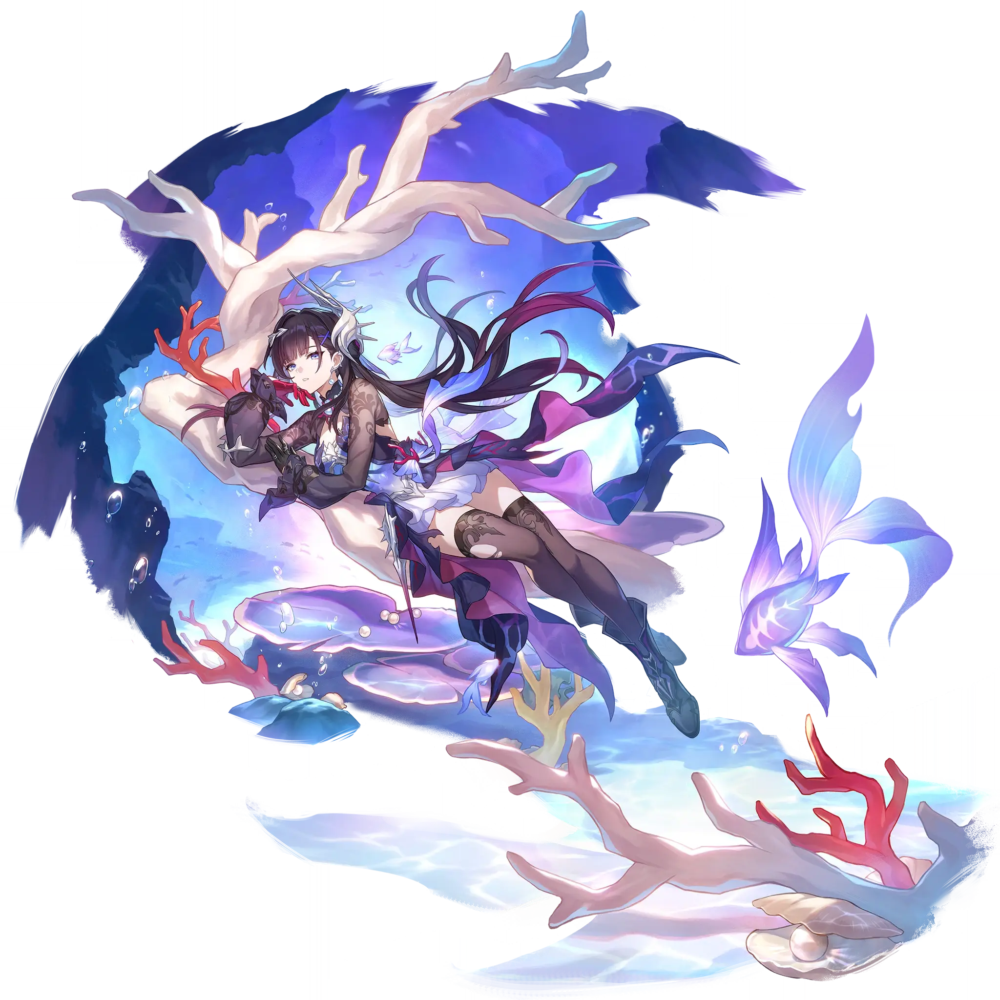

Hysilens
Best Hysilens build guide for Honkai Star Rail. See Hysilens's best Relics, Light Cones, teams, Eidolons, Trace priority, and how to play Hysilens.
🔍 Detail Skill
Semua skill aktif dan pasif beserta efeknya.
Deals Physical DMG equal to #1[i]% of Hysilens's ATK to one designated enemy.
Has a 100% base chance to increase the DMG taken by all enemies by #2[i]%, lasting for 3 turn(s). At the same time, deals Physical DMG equal to #1[i]% of Hysilens's ATK to all enemies.
When an ally target attacks, there is a 100% base chance for Hysilens to inflict the hit enemy target with one of the following states: Wind Shear, Bleed, Burn, or Shock. Priority is given to inflicting a different state. While in the Wind Shear/Burn/Shock state, at the start of each turn, the enemy target takes Wind/Fire/Lightning DoT equal to #1[i]% of Hysilens's ATK for 2 turn(s). While in the
After using Technique, creates a Special Dimension that lasts for 20 seconds and automatically moves forward. Enemies within the Special Dimension enter the "Soulstruck" state. "Soulstruck" enemies will not attack ally targets and will follow the dimension while it persists. After entering combat with "Soulstruck" enemies, there is a 100% base chance to inflict each enemy target with 2 of the foll
⚔ Light Cone Terbaik
Diurutkan dari yang paling kuat. Persentase menunjukkan performa relatif terhadap pilihan terbaik.
💎 Relic Set Terbaik
Set terbaik untuk karakter ini, diurutkan berdasarkan prioritas.
📊 Stat Utama
Stat yang dicari pada tiap slot.
👥 Tim yang Direkomendasikan
Karakter yang sering dipasangkan bersama Hysilens.
 Kafka
Kafka
 Black Swan
Black Swan
 Cyrene
Cyrene
 Jiaoqiu
Jiaoqiu
 Sampo
Sampo
 Robin
Robin
🔗 Lanjutkan
Build ini dirangkum dari Prydwen Institute. Starwise tidak menghitung sendiri. Angka bisa berubah setelah patch atau karakter baru rilis.